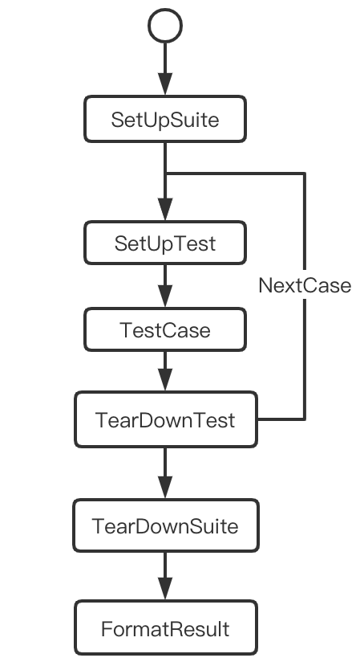
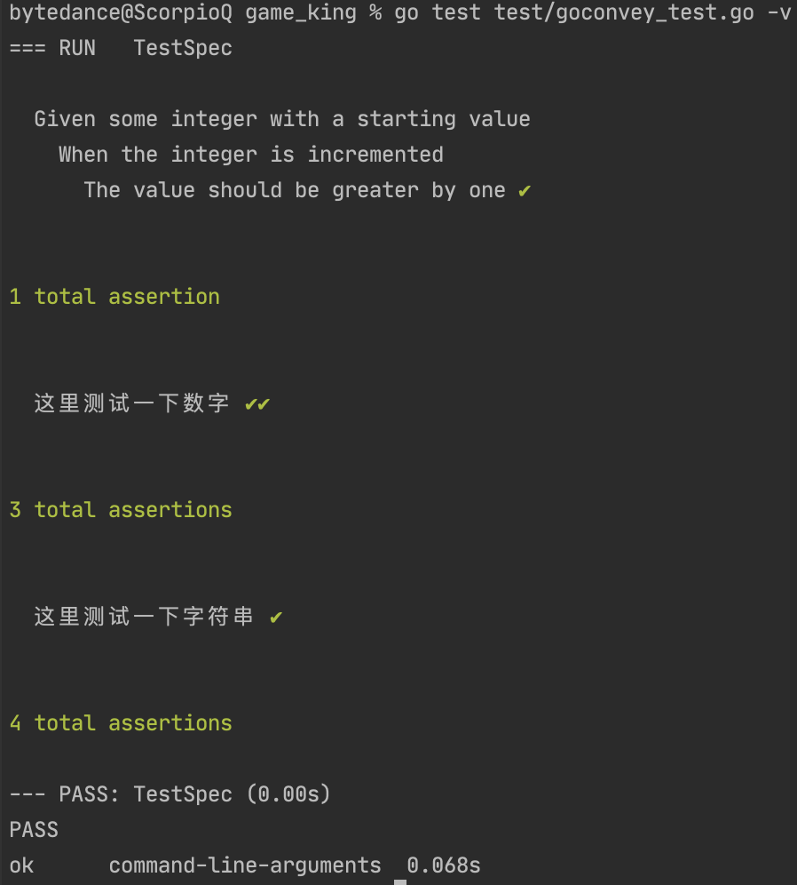
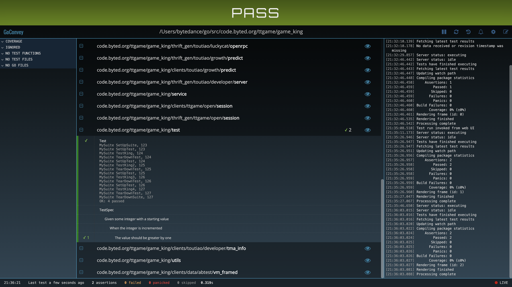

常用测试工具库 testing 1 2 3 4 5 6 7 8 9 10 11 12 13 14 15 16 17 18 19 20 21 22 23 24 25 26 27 28 29 30 31 32 33 34 35 36 37 38 39 40 41 42 43 44 45 46 47 48 49 50 51 52 53 54 55 56 57 58 59 60 61 62 63 64 65 66 67 68 69 70 71 func Fib(n int) int { if n < 2 { return n } return Fib(n-1) + Fib(n-1) } func TestFib(t *testing.T) { var fibTests = []struct { in int // input expected int // expected result }{ {1, 1}, {2, 1}, {4, 3}, {7, 13}, } for _, tt := range fibTests { actual := Fib(tt.in) if actual != tt.expected { t.Errorf("Fib(%d) = %d; expected %d", tt.in, actual, tt.expected) } } } func TestFoo(t *testing.T) { // <setup code> t.Run("A=1", func(t *testing.T) { ... }) t.Run("A=2", func(t *testing.T) { ... }) t.Run("B=1", func(t *testing.T) { ... }) // <tear-down code> } /* 常见T函数 t.Log : 输出信息 t.Logf : 输出有 format 的信息 t.Fail : case 失败，测试继续 t.FailNow : t.Fail + 中断 t.SkipNow : case 跳过，中断 t.Skip : t.Log + t.SkipNow t.Skipf : t.Logf + t.SkipNow t.Error : t.Log + t.Fail t.Errorf : t.Logf + t.Fail t.Fatal : t.Log + t.FailNow t.Fatalf : t.Logf + t.FailNow */ func BenchmarkHello(b *testing.B) { for i := 0; i < b.N; i++ { fmt.Sprintf("hello") } } // BenchmarkHello 10000000 282 ns/op func ExampleHello() { fmt.Println("hello") // Output: world } // got: // hello // want: // world TestMain(m *testing.M){ // 测试 Main 函数 // do some setup exitCode := m.Run() // run TestXxxx() // do some teardown os.Exit(exitCode) }
1 2 3 4 5 6 7 8 9 10 11 12 13 14 15 16 17 18 19 20 21 22 23 24 25 26 27 28 29 30 31 32 33 34 35 36 37 38 package test import ( "fmt" "testing" . "gopkg.in/check.v1" ) func Test(t *testing.T) { TestingT(t) } type MySuite struct{ Comm int64 } var _ = Suite(&MySuite{Comm:1}) func (s *MySuite) SetUpSuite(c *C) { } func (s *MySuite) SetUpTest(c *C) { } func (s *MySuite) TestKing(c *C) { s.Comm++ c.Assert(s.Comm, Equals, 2) // 立即结束 c.Assert(s.Comm, Not(Equals), 3) c.Check(s.Comm, Equals, 2) // 报错，继续执行 c.Assert("hello", Matches, "world") c.Assert(err, IsNil) c.Assert(err, NotNil) } func (s *MySuite) TearDownTest(c *C) { } func (s *MySuite) TearDownSuite(c *C) { }

1 2 3 4 5 6 7 8 9 10 11 12 13 14 15 16 17 18 19 20 21 22 23 24 25 26 27 28 29 30 31 32 33 34 35 36 37 38 39 40 41 42 43 44 45 46 47 48 49 50 51 52 53 54 55 56 57 58 59 60 61 62 63 64 65 66 67 68 69 70 71 72 73 74 75 76 77 78 79 80 package test import ( ... ) func TestSomethingEasy(t *testing.T) { assert.Equal(t, 1, 1) // 报错，继续执行 require.Equal(t, 2, 2) // 立即结束 assert := assert.New(t) assert.Equal(1, 1) assert.NotEqual(123, 122) assert.Greater(2, 1) assert.GreaterOrEqual(2, 1) assert.Nil(a) } type ExampleTestSuite struct { suite.Suite } func (suite *ExampleTestSuite) SetupSuite() { } func (suite *ExampleTestSuite) SetupTest() { } func (suite *ExampleTestSuite) AfterTest(suiteName, testName string) { } func (suite *ExampleTestSuite) TestExample() { } func (suite *ExampleTestSuite) BeforeTest(suiteName, testName string) { } func (suite *ExampleTestSuite) TearDownTest() { } func (suite *ExampleTestSuite) TearDownSuite() { } func TestExampleTestSuite(t *testing.T) { } // -------------------------------------- type DoInterface interface { DoSomething(number int) int } type MyService struct { Worker DoInterface } func (s *MyService)DoBigThing() { s.Worker.DoSomething(123) } type MyMockedObject struct{ mock.Mock } func (m *MyMockedObject) DoSomething(number int) int { args := m.Called(number) return args.Int(0) } func TestSomething(t *testing.T) { testObj := new(MyMockedObject) testObj.On("DoSomething", 123).Return(124) ms := MyService{testObj} ms.DoBigThing() testObj.AssertExpectations(t) }
1 2 3 4 5 6 7 8 9 10 11 12 13 14 15 16 17 18 19 20 21 22 23 24 25 26 27 28 29 30 31 package test import ( "testing" . "github.com/smartystreets/goconvey/convey" ) func TestSpec(t *testing.T) { // Only pass t into top-level Convey calls Convey("Given some integer with a starting value", t, func() { x := 1 Convey("When the integer is incremented", func() { x++ Convey("The value should be greater by one", func() { So(x, ShouldEqual, 2) }) }) }) Convey("这里测试一下数字", t, func() { So(1, ShouldEqual, 1) So(1, ShouldNotEqual, 2) }) Convey("这里测试一下字符串", t, func() { So("123", ShouldEqual, "123") }) }


1 2 3 4 5 6 7 8 9 10 11 12 13 14 15 16 17 18 19 20 21 22 23 24 25 26 27 28 29 30 func Add(a, b int) int { return a + b } func TestOne(t *testing.T){ patch := gomonkey.ApplyFunc(Add, func (a, b int) int { return a - b }) defer patch.Reset() fmt.Println(Add(1, 2)) } // --------------------------------- type MyTest struct { } func (m *MyTest) Add(a, b int) int { return a + b } func TestOne(t *testing.T){ m := &MyTest{} patch := gomonkey.ApplyMethod(reflect.TypeOf(m), "Add", func (m *MyTest, a, b int) int { return a - b }) defer patch.Reset() fmt.Println(m.Add(1, 2)) }
小坑：
1 $ go test -gcflags=-l xxx_test.go
httptest 1 2 3 4 5 6 7 8 9 10 11 12 13 14 15 16 17 18 19 20 21 func TestHTTP(t *testing.T){ r := ginex.Default() r.GET("/test", handleTest) req := httptest.NewRequest("GET", uri, nil) w := httptest.NewRecorder() // w实现了http.ResponseWriter接口 // httptest模拟构造前置数据 r.ServeHTTP(w, req) result := w.Result() defer result.Body.Close() body, _ := ioutil.ReadAll(result.Body) fmt.Println(string(body)) // hello } func handleTest(c *gin.Context) { c.String(http.StatusOK, "hello") }
Postman bootcamp中这两小节的内容可以抽空浏览下，半个小时搞定